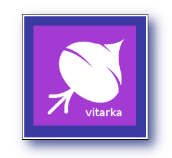

Vitarka Toolbar
Version 0.2.0
Vitarka Toolbar is a simple, unintrusive desktop timer application fully integrated into the Vitarka time-management system.
Copyright 2021 George A. Michel.
All rights reserved.